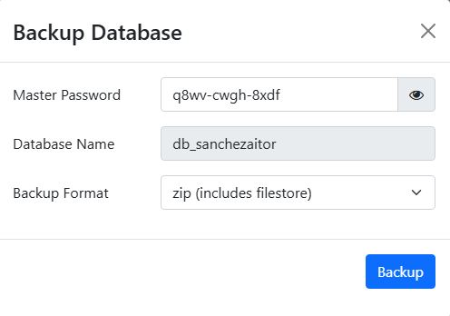
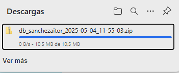
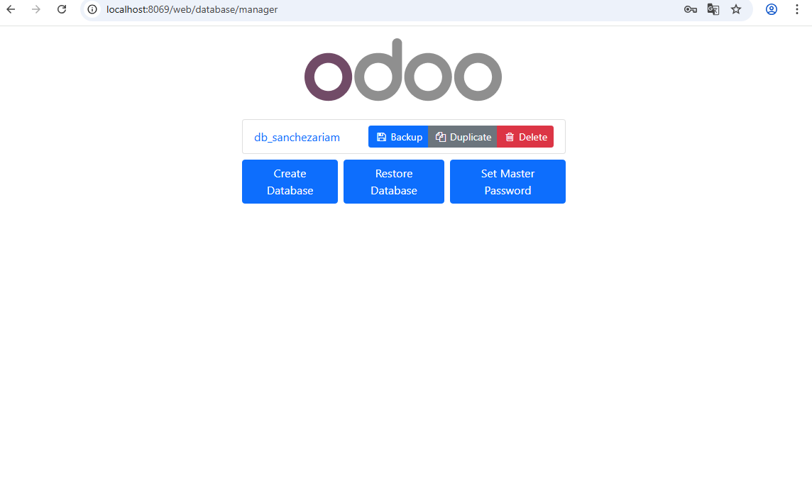
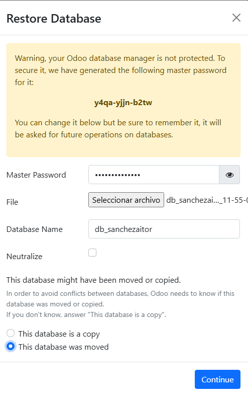

Luego de esto, nos pedirá los datos de "Master Password", el nombre de la base de datos y en que formato quieres el .zip.

Vemos que tenemos listo el zip.

Ahora nos dirigiremos a la máquina en la que queremos que este la base de datos y nos dirigimos al mismo link. Aqui le daremos a "Restore Database", donde restauraremos la base de datos a partir del .zip anterior.

Por otra parte, debemos rellenar los datos para la base de datos, en este caso "Master Password", el archivo ZIP que queremos restaurar, el nombre de la base de datos y finalmente seleccionar que se ha removido ya que viene de otro lugar.

Una vez hecho todo lo anterior, ya estaría lista la restauración de la base de datos de "db_sanchezaitor".